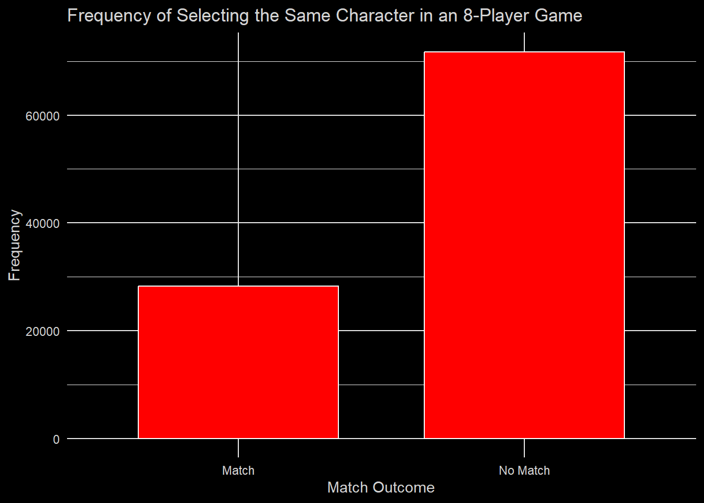

num_players <- 8
roster <- c("Mario", "Donkey Kong", "Link", "Samus", "Dark Samus", "Yoshi", "Kirby", "Fox", "Pikachu", "Luigi", "Ness", "Captain Falcon", "Jigglypuff", "Peach", "Daisy", "Bowser", "Ice Climbers", "Sheik", "Zelda", "Dr. Mario", "Pichu", "Falco", "Marth", "Lucina", "Young Link", "Ganondorf", "Mewtwo", "Roy", "Chrom", "Mr. Game & Watch", "Meta Knight", "Pit", "Dark Pit", "Zero Suit Samus", "Wario", "Snake", "Ike", "Pokémon Trainer", "Diddy Kong", "Lucas", "Sonic", "King Dedede", "Olimar", "Lucario", "R.O.B.", "Toon Link", "Wolf", "Villager", "Mega Man", "Wii Fit Trainer", "Rosalina & Luma", "Little Mac", "Greninja", "Mii Brawler", "Mii Swordfighter", "Mii Gunner", "Palutena", "Pac-Man", "Robin", "Shulk", "Bowser Jr.", "Duck Hunt", "Ryu", "Ken", "Cloud", "Corrin", "Bayonetta", "Inkling", "Ridley", "Simon", "Richter", "King K. Rool", "Isabelle", "Incineroar", "Piranha Plant", "Joker", "Hero", "Banjo & Kazooie", "Terry", "Byleth", "Min Min", "Steve", "Sephiroth", "Pyra/Mythra", "Kazuya", "Sora")Mini Project #2: Simulation
This project simulates 8-player matches of the video game Super Smash Bros. Ultimate, in order to find the probability that players pick the same character as another player.

First, we create the num_player variable and set it to 8, to represent the number of players in each game. Then we create the character vector roster, which contains all 86 playable characters in the game.
Then we define the function simulate_game, which simulates one match of the game, where the players choose from the roster.
simulate_game <- function(num_players, roster) {
player_selections <- sample(roster, num_players, replace = TRUE)
return(sum(duplicated(player_selections)))
}Now, we run this simulation num_simulations times . Throughout the simulations, we count how many games had at least one match. Then we print those values. Additionally, we create a numeric vector match_counts of length num_simulations, to store how many matches occur each simulation.
num_simulations <- 100000
collision_count <- 0
match_counts <- numeric(num_simulations)
for (i in 1:num_simulations) {
if (simulate_game(num_players, roster) > 0) {
collision_count <- collision_count + 1
}
match_counts[i] <- simulate_game(num_players, roster)
}
collision_probability <- collision_count / num_simulations
cat("Number of simulations with collisions:", collision_count, "\n")Number of simulations with collisions: 28231 cat("Probability of selecting the same character:", collision_probability, "\n")Probability of selecting the same character: 0.28231 Next we create a tibble using the data from those simulations…
collision_data <- tibble(
Match_Outcome = c("Match", "No Match"),
Frequency = c(collision_count, num_simulations - collision_count)
)
collision_data# A tibble: 2 × 2
Match_Outcome Frequency
<chr> <dbl>
1 Match 28231
2 No Match 71769…and use that tibble to create a plot to show the proportion of games where matches occurred.
ggplot(collision_data, aes(x = Match_Outcome, y = Frequency, fill = Match_Outcome)) +
geom_bar(stat = "identity", fill = "red", color = "white", width =0.7) +
labs(
title = "Frequency of Selecting the Same Character in an 8-Player Game",
x = "Match Outcome",
y = "Frequency"
) +
theme_minimal() +
theme(legend.position = "none",
panel.background = element_rect(fill = 'black', color = 'black'),
plot.background = element_rect(fill = 'black', color = 'black'),
text = element_text(color = 'lightgray'),
axis.text = element_text(color = 'lightgray'))
Here we create a tibble to show the distribution of collision counts per simulation.
collision_counts <- replicate(num_simulations, simulate_game(num_players, roster))
collision_df <- tibble(Match_Count = collision_counts)
collision_df |>
count(Match_Count)# A tibble: 5 × 2
Match_Count n
<int> <int>
1 0 71546
2 1 25259
3 2 3027
4 3 164
5 4 4Finally, we plot this data in a histogram.
collision_df <- collision_df |>
count(Match_Count) |>
mutate(Proportion = n / sum(n))
ggplot(collision_df, aes(x = Match_Count, y = Proportion)) +
geom_bar(stat = "identity", fill = "red", color = "white", width = 0.5) +
labs(
title = "Distribution of Matches per Simulation",
x = "Matches Per Game",
y = "Proportion of Games"
) +
theme_minimal() +
theme(legend.position = "none",
panel.background = element_rect(fill = 'black', color = 'black'),
plot.background = element_rect(fill = 'black', color = 'black'),
text = element_text(color = 'lightgray'),
axis.text = element_text(color = 'lightgray'))From all of these simulations and graphs, we have visualized the probability that any players pick the same character in an 8-player game of Super Smash Bros. Ultimate. Also, we have seen the proportions of match counts throughout all of the simulated games. Although this data is interesting to analyze, the probabilities calculated may not be fully reflective of reality, as actual players may have preferences for certain characters, which means the probabilities could be drastically different. However, in a fully random scenario, such as when all players select character fully at random, these plots would display those same probabilities.